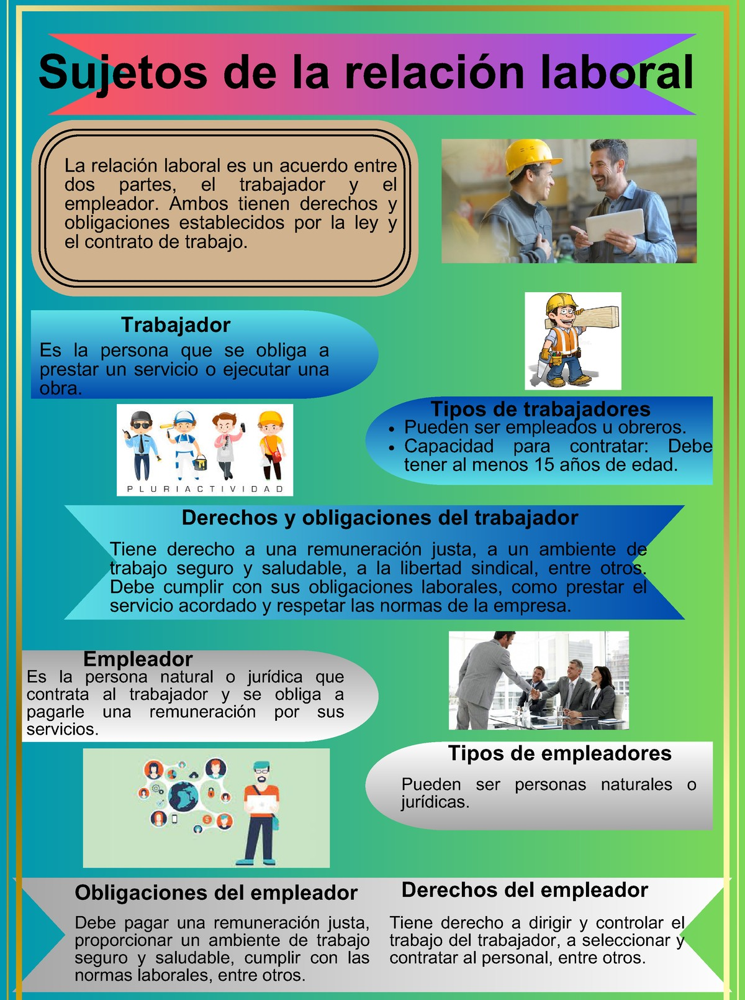

La Seguridad y Salud en el Trabajo (SST) es un pilar fundamental para garantizar el bienestar de los empleados y la eficiencia en cualquier organización. Un entorno laboral que prioriza las condiciones de seguridad y salud no solo protege a los trabajadores de accidentes y enfermedades, sino que también mejora la productividad y satisfacción general. En este blog, exploraremos cómo las condiciones laborales, el ambiente físico, la seguridad y las tareas bien estructuradas se interrelacionan para crear un entorno de trabajo saludable y eficiente.
Fuente: Elaboración propia.
Los modelos de seguridad y salud en el trabajo de la OIT destacan cuatro elementos clave que deben considerarse en todo entorno laboral:
Fuente: Elaboración propia basada en los conceptos de la OIT.
Todos estos elementos están interconectados. Por ejemplo, una empresa con condiciones organizativas deficientes podría tener problemas de comunicación que generen errores en la implementación de medidas de seguridad, aumentando el riesgo de accidentes. A su vez, un mal ambiente de trabajo con iluminación deficiente o exposición a ruidos excesivos afectará la concentración de los trabajadores, aumentando la carga mental y provocando errores en las tareas. Como resultado, los empleados no solo se verán expuestos a riesgos físicos, sino que su productividad disminuirá drásticamente (OIT, 2016).
Fuente: Organización Internacional del Trabajo.
Para garantizar un entorno laboral saludable y eficiente, los líderes deben:
Fuente: Estudio sobre Buenas Prácticas en Seguridad Laboral.
| Elemento | Factores (Fuentes Generadoras) | Descripción | Identificación del Peligro Ocupacional |
|---|---|---|---|
| Objeto de trabajo / Sujeto de trabajo | Equipos, mobiliario y áreas de trabajo | Manipulación de superficies sucias, residuos o herramientas desgastadas | Exposición a agentes químicos, biológicos y lesiones por cortes o golpes |
| Productos químicos de limpieza, herramientas, materiales técnicos | Uso frecuente de desinfectantes, pinturas, aceites o solventes | Inhalación de vapores tóxicos, contacto con sustancias irritantes | |
| Medios | Aspiradoras, hidro lavadoras, taladros, llaves de ajuste | Equipos en mal estado o uso inadecuado | Descargas eléctricas, atrapamientos, golpes |
| Actividad humana | Trabajo de pie prolongado | Limpieza o reparaciones en áreas de difícil acceso | Fatiga, dolores musculares, lesiones por posturas forzadas |
| Movimientos repetitivos, levantamiento de cargas | Transporte de materiales pesados, uso de herramientas manuales | Lumbalgia, lesiones en extremidades, sobreesfuerzo físico | |
| Demandas intelectuales (Carga mental) | Información, ritmo de trabajo | Priorizar tareas múltiples con tiempo limitado | Estrés, agotamiento mental |
| Libertad para tomar decisiones | Decisiones rápidas sobre métodos o herramientas | Baja autonomía genera frustración | |
| Exigencia de atención | Supervisión de áreas críticas o equipos complejos | Distracción puede causar accidentes | |
| Responsabilidad y estatus | Mantenimiento de equipos o espacios esenciales | Alta responsabilidad por fallas | |
| Capacidad física y mental | Adaptación a diferentes entornos y cargas | Falta de tolerancia puede aumentar el riesgo de errores | |
| Condiciones de la organización del trabajo | Jornadas extendidas o rotativas | Fatiga por turnos prolongados | Fatiga acumulativa |
| Salario | Remuneración baja | Desmotivación, estrés financiero | |
| Estabilidad en el empleo | Contratos temporales o permanentes | Inseguridad laboral genera preocupación | |
| Categoría profesional | Técnicos, operativos | Subvaloración del rol | |
| Antigüedad | Variedad de experiencia | Riesgo de accidentes con personal nuevo | |
| Características de mando (democrático, paternalista, autocrático, entre otros) | Tamaño, ubicación | Empresa pequeña puede tener menos recursos | |
| Formas de control (supervisión, control calidad, productos) | Supervisión de tareas específicas | Insuficiente control causa fallos | |
| Canales de comunicación (que se establece para la realización correcta de la tarea) | Canales claros entre áreas | Falta de comunicación provoca errores | |
| Relaciones (con el departamento o área de la empresa, como con otras personas) | Coordinación con diferentes áreas | Conflictos por malas relaciones laborales | |
| Desarrollo profesional (crecimiento personal y profesional) | Capacitación y oportunidades de crecimiento | Ausencia de desarrollo limita las habilidades | |
| Beneficios (que genera la empresa a sus trabajadores) | Alimentación, transporte, salud | Ausencia de beneficios afecta la calidad de vida | |
| Características de la empresa (tamaño, tipo de actividad, ubicación) | Empresas pequeñas pueden tener recursos limitados | ||
| Condiciones de ambiente de trabajo | Condiciones de las instalaciones de la empresa y del puesto de trabajo | Espacios limpios y seguros | Espacios pequeños o mal ventilados aumentan riesgos |
Fuente: Análisis de condiciones laborales.
En conclusión, la seguridad y salud en el trabajo no es solo una responsabilidad legal, sino una inversión en la eficiencia y el bienestar de los empleados. Cuando se cuidan las condiciones de la organización, del medio ambiente, las condiciones de seguridad y las tareas, se crea un entorno laboral más seguro, productivo y sostenible a largo plazo.
Ávila, H. F., González, M. M., & Licea, S. M. (2020). La entrevista y la encuesta: ¿métodos o técnicas de indagación empírica? Didasc@ lia: didáctica y educación. Disponible en: https://revistas.ult.edu.cu
Comisión de Salud Pública. (2001). Agentes biológicos. Ministerio de Sanidad y Consumo. Disponible en: https://www.mscbs.gob.es
Henao Robledo, F. (2014). Riesgos Físicos: Conceptos Básicos. Ecoe Ediciones. Disponible en: https://elibro-net.bibliotecavirtual.unad.edu.co
Instituto Nacional de Seguridad y Salud en el Trabajo (INSST). (2002). La carga mental de trabajo. Disponible en: https://www.insst.es